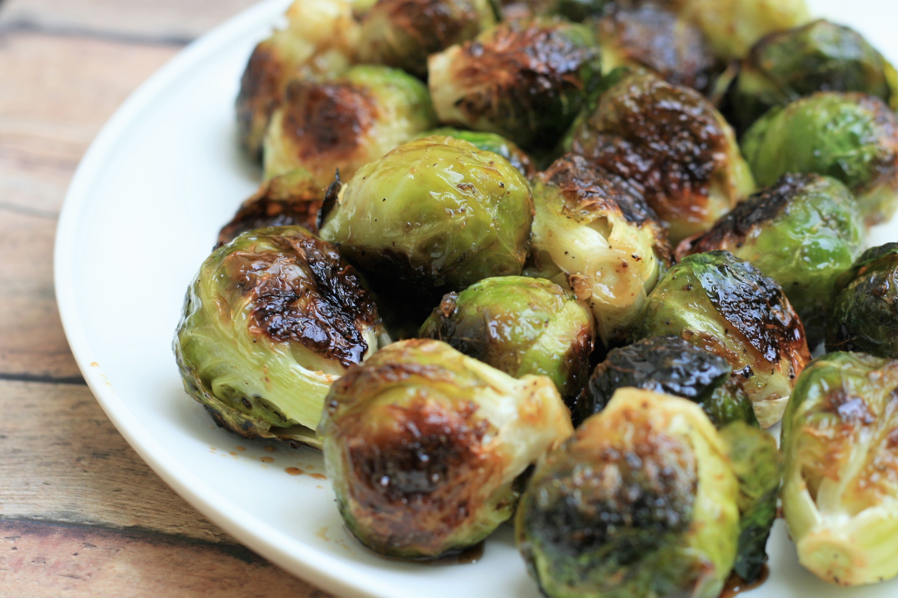

Roasted Brussel Sprouts with Balsamic and Honey

How to Make
This is an easy and great recipe to make your brussel sprouts taste greate utilizing sweet and savory
flavors to enhance this wonderful vegetable.
Ingredients
- 1 Pound Brussel sprouts, trimmed
- 3 tablespoons extra-virgin olive oil
- 1 teaspoon kosher salt, or depends on your taste
- 1/2 teaspoon freshly ground black pepper, or to taste
- 1 tablespoon good quality balsamic vinegar
- 2 tablespoons honey, or to taste
Steps
- Preheat the oven to 425 degrees F (220 degrees C). Line a baking sheet with parchment paper.
- Combine Brussels sprouts, olive oil, salt and pepper in a large bowl;
toss to coat. Spread out evenly on the prepared baking sheet.
- Roast in the preheated oven until browned, about 30 minutes, turning after 15 minutes.
Remove from oven and drizzle with balsamic vinegar and honey, mixing to coat evenly.
- Bon appetit!
Source: Roasted Brussels Sprouts with Balsamic and Honey by cdbruss